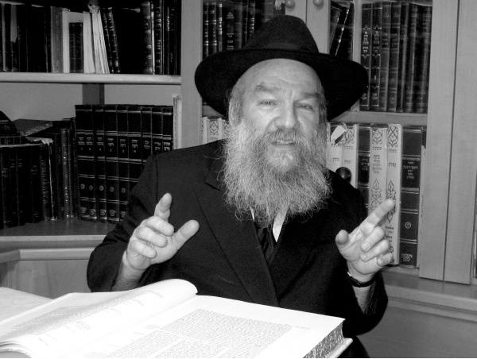

Building Chabad in Eilat from the Ground Up
It’s hard to compare Eilat of forty years ago to Eilat of today. The tiny town has turned into an international tourist city and, at the same time, its spiritual-Torah-Chassidic character has changed drastically. The Rebbe saw this city on the shores of the Red Sea as “a coastal city that is connected with the entire world which needs to be used in order to spread Torah from Eilat to the world.” * Eilat in the early days.

25 years ago, Eilat experienced a minor earthquake which was barely felt. A few minutes after the quake, the phone in Rabbi Yosef Hecht’s home rang. On the line was the Rebbe’s secretary, R’ Leibel Groner, who said the Rebbe asked him to find out whether the earthquake had been felt in Eilat and whether anyone had been hurt.
“I learned a lot from this episode,” said R’ Hecht. “First, the fact that the Rebbe knows, in real time, what is happening everywhere in the world. Even before news of the earthquake had been publicized in the country, the Rebbe knew about it. Second, how concerned the Rebbe is for every Jew. He cares whether a Jew in Eilat may have been hurt.”
PIONEER RABBIS
This concern of the Rebbe for the residents of Eilat is what led to Rabbi Yosef Hecht’s going to this city and becoming the shliach of the Rebbe and Chief Rabbi there. He and his wife moved to Eretz Yisroel in 5737 together with the famous group of shluchim. They settled in Tzfas and R’ Hecht learned in kollel.
In Shevat 5739/1979, the Rebbe’s famous letter to the shluchim arrived in which he told them that those suited for the rabbinate should look for a rabbinical position. At that time, there were no Lubavitcher rabbis of cities. This was due to the political structure of the Ministry of Religion and the religious askanus of the time. With this letter, the Rebbe changed the way of thinking among Chabad askanim in general and the shluchim in particular.
The first among the shluchim to carry out this assignment was R’ Yosef Hecht, a 28 year old father of two. He had a number of offers of rabbinic positions and he sent a list of possibilities to the Rebbe. The Rebbe’s speedy answer was Eilat.
R’ Hecht submitted his candidacy and from then, until the end of the election period, the Rebbe was very involved. “It was the first attempt of a Lubavitcher, a shliach of the Rebbe, to be the officially elected rav of a city. The Rebbe wanted me to succeed and he sent instructions and advice about who to speak with and who not to speak with. At that time, the religious council leader in Eilat was someone who had learned in Chabad schools in Morocco and Paris. The Rebbe told us to speak with those people he knew in Morocco and France so they, in turn, would work on him.”
At that time, R’ Yisroel Glitzenstein ran the Chabad outreach in the city (he ran Tzach in Eilat and was one of the first shluchim in Eretz Yisroel) and he himself was involved and very active in the elections.
The elections took place at the end of Elul 5739 and R’ Hecht was elected as rav of the city. It was a few days before Rosh HaShana when R’ Hecht wrote to the Rebbe of his plans, that right after the Yomim tovim he would go to Eilat and look for an apartment. The Rebbe’s speedy response was, why after the Yomim tovim? You should be there for Rosh HaShana! Then the Rebbe told him he should be there for Sukkos and Simchas Torah too.
“I arrived in Eilat before Rosh HaShana and stayed with friends. I did the same thing for the other Yomim tovim. On Rosh HaShana I did Mivtza Shofar in central locations. On Sukkos we erected public sukkos in the center of town and invited public figures to join us. I went around to every key person in the city with a lulav and esrog. The editor of the local paper told me he was not religiously observant but ‘When the rav of the city comes to my office in order to say the blessing over the dalet minim with me, with respect and good will I am happy to oblige and make the blessing.’
“Eilat was a small town and news of this new outreach activity quickly got around. I found myself in a very positive, receptive atmosphere.”
Rebbetzin Hecht went to the Rebbe that Tishrei (5740) and when she had yechidus at the end of the month the Rebbe said to her, “Surely you know that your husband was very successful over Yom Tov in Eilat.”
That was the beginning. The rest is history.
EARLY DAYS
It’s hard to compare Eilat of forty years ago to Eilat of today; it is virtually unrecognizable. The tiny town has turned into an international tourist city. There were only about 18,000 people back then in Eilat (today there are about 48,000 people). Spiritually too, Eilat back then was not an appealing place to religious Jews. There were only six or seven shuls, very few kosher products and certainly none with a mehadrin hechsher. There were no battei midrash and no ongoing shiurim. There was one, old, neglected mikva. Only about thirty-forty families observed the laws of family purity properly. The level of religious education was also nothing to write home about.
“I arrived in Eilat with my wife and two children. It was necessary to create a commotion and change the mindset to one in which an active religious life in Eilat would be considered a possibility. Frum people had to be attracted to Eilat as a place where they could raise their children in a spirit of Torah and Chassidus.”
What was the first thing you did?
“The first thing we addressed was family purity. There was only one, old, unattractive mikva in the entire city. After battles and many hardships, we managed to obtain money for a new, beautiful mikva. The Rebbe sent a telegram to mark the groundbreaking.
“We also began forming women’s groups on the subject of family purity, which were very successful thanks to something else I started simultaneously. Before Rosh HaShana I visited preschools and elementary schools and blew the shofar. The children loved it, the teachers enjoyed it, and I had an opening to everyone in the city, because nearly everyone had a child in preschool. This mivtza was a novelty and whenever I walked in the street, I met children who pointed me out to their parents, ‘There’s the rabbi who blew the shofar for us!’ I sent shana tova letters to everyone in town before Rosh HaShana.
“This opened up many of the schools to me and many teachers invited me to speak to the parent body. That is how I reached hundreds of mothers to whom I spoke about the importance of family purity. I said we were ready to teach too. Within a short time, there was a sharp increase in awareness of the topic. The mikva ladies ‘complained’ that the work had gotten to be too much for them. Today, over 1200 families keep the laws of family purity, truly a massive change over what was.”
R’ Hecht’s walking about Eilat in rabbinic garb and with a beard was an unusual sight. But thanks to his warmly received activities, he was beloved to the residents. “People felt that they had someone to whom they could ask questions, someone they could talk to and from whom they could get advice.”
Along with the positive reception, no doubt you had to deal with many difficulties.
“I felt it a privilege to be on this important shlichus of the Rebbe and the difficulties were eclipsed by the joy I felt in giving the Rebbe nachas.”
How the Rebbe related to R’ Hecht’s shlichus in Eilat can be understood from the following episode. Every year, the Rebbe sent a telegram to all Chabad centers in Eretz Yisroel before Rosh HaShana including: Kfar Chabad, Nachala, Lud, Yerushalayim, and Tzfas. These were usually read over the loudspeaker in 770 before the Rebbe came in for the farbrengen the night of Erev Rosh HaShana. The person reading it would announce that the telegram had been sent to the specified locations.
At the 29 Elul farbrengen of 5739, a few days after R’ Hecht was elected, the telegram was read as usual and in addition to all the places that were specified, it was announced that the Rebbe had also sent a telegram to R’ Hecht in Eilat.
What do you take from that?
“It demonstrated the importance and fondness that the Rebbe had for Eilat and for my being elected rav there. I see this as a granting of kochos at the start of the establishment of a Chabad community in Eilat.”
EXTRAORDINARY INVOLVEMENT
Eilat and R’ Hecht got special treatment from the Rebbe over the years. Nearly every time R’ Hecht’s parents passed by the Rebbe for dollars, the Rebbe gave them an extra dollar for their son in Eilat. The same was true for R’ Hecht’s oldest son, Menachem Mendel, who learned in New York even before he was bar mitzva. Every time he passed by the Rebbe for dollars, the Rebbe gave him an extra dollar “for your father in Eilat.” Once this became routine, the Rebbe gave him the extra dollar without specifying what it was for.
Before Yom Kippur 5750, the Rebbe gave out lekach and a dollar along with the booklet “U’Shavtem Mayim B’Sasson.” Before the distribution, the people in charge announced that this distribution was only for those present and they should not ask on behalf of others. As was the case many times before, when R’ Hecht’s son passed by, the Rebbe gave him two sets including one for his father and he was the only one who received this for someone who was not present.
***
Eilat is known as a resort city. In the lingo of Israelis, they say “going down to Eilat” (since it’s in the south). However, the Rebbe did not view Eilat in this way. The Rebbe viewed Eilat as a center of Torah from which Torah went forth to the world.
“In 5751, I brought the chairman of the Hotels Association in Eilat to the Rebbe. It is a prestigious and important job. The man is constantly in touch with tourist agents around the world and he provides them with vacation packages to Eilat. When we passed by the Rebbe for dollars, I introduced him and he asked for a bracha that the city’s tourism industry develop. The Rebbe blessed him and said: Surely you know that Eilat is a coastal city and since a coastal city is connected to the entire world, you need to use this in order to spread Torah from Eilat to the entire world.
“This is the Rebbe’s revolutionary approach. If people think that someone who wants to distance himself from Torah should go down to Eilat, to the Rebbe it’s just the opposite. Eilat doesn’t need help from religious centers to bring Torah to Eilat. Eilat needs to be in such a state that it is so full of Torah and Chassidus that it itself becomes a center from which Torah is spread to the entire world.”
The Rebbe spoke along these lines when R’ Hecht’s father once passed by the Rebbe. The Rebbe said to him, “Your son is in a place where sea and land commingle, and that is why it is possible to achieve great and wonderful things there and to ‘turn things upside down.’”
Another time, the mayor of Eilat passed by the Rebbe. He gave the Rebbe the Chabad house’s building plans and asked for a bracha. The Rebbe said to him, “Surely you know that Eilat is associated with Shlomo HaMelech and you as mayor ought to make sure that the entire city is in accordance with the will of Shlomo HaMelech, especially where there is a beach and port and all good things.”
How do you implement the Rebbe’s vision?
“Since it’s a tourist city, Eilat attracts Jews from all over the world. Many of them find us, whether through minyanim at the hotels, shiurim, Jewish outreach on the street, or at the Chabad house. When they return home, they say that Chabad is even in Eilat and is doing great things. I often get regards from shluchim around the world.
“As I said, a person who wants to leave routine behind, have fun and do his own thing will go down to Eilat. It’s because of this spiritually negative image that people are surprised, excited and impressed by the Chassidic-Torah programs and activities we provide. It’s not what they expect in Eilat. Tourists can’t believe what we do there and word gets out that even in a resort town you can be a G-d fearing person and a Chassid.
“Before Pesach one year, I met a man from London who was staying in a hotel in Eilat. Before Yom Tov I brought him shmura matza. Later, he came to shul and saw the large minyan and couldn’t get over it. He said, ‘If I did not see it with my own eyes, I would not believe there is such a thing in Eilat.’ He gave us a nice donation.
“This is what is meant by Torah going forth from Eilat to the entire world. Eilat is a crossroads. Tourists go back home and tell everyone what they saw.
“In general, the Rebbe constantly asked that we advertise the fact that Chabad is in Eilat. There was once an article about Judaism in Eilat in an English newspaper. I knew nothing about it until I got a phone call from R’ Groner who asked me whether I knew that an article about Eilat was to be published in such-and-such a newspaper. How was it that there was an article about Jewish Eilat with no mention of the rav of the city and Chabad’s work? R’ Groner said that the Rebbe also said that if I didn’t know about the article that was going to be written, that itself was a question. Why didn’t I know?
“From this and other incidents I learned that the Rebbe did not want to see publicity about Eilat without a mention of Chabad’s work in the city.
“I remember that when I went to the Rebbe for the first time after three and a half years on shlichus, for Shavuos 5740/1980, the Rebbe told R’ Gershon Jacobson, the editor of the Algemeiner Journal, to write a comprehensive article about my being elected as rav of Eilat and about my work in the city. Later on, the Rebbe stopped me in front of 770 and asked me, ‘How is it going with the rabbanus in Eilat?’ When I said, ‘Boruch Hashem,’ the Rebbe said, ‘Surely it will be better and better.’
“Every time I was interviewed by the newspapers or the electronic media the Rebbe wrote that it would be proper to add many times over along these lines. The Rebbe once added that my wife should also participate in the interviews so as to have an impact in matters relevant to women and girls.
“When I reported about these interviews to the Rebbe, he was always pleased. It made no difference the size or how widely distributed the paper was or how many people listened to that radio station. The Rebbe viewed all forms of publicity as a way to bring the word of Hashem to another Jew.”
CHASSIDISHE CHINUCH IN DISTANT EILAT
For a number of years, a broad range of Jewish and Chassidic activities were run by the rav of the city, R’ Hecht, and the director of the Chabad house, R’ Glitzenstein. Later, R’ Boruch Levkivker and R’ Shimon Eisenbach joined them to increase the number of shiurim in the city. They all quickly realized that what was needed was a Chabad k’hilla.
The first Chabad school was a preschool which opened in 5750.
“Many people had become close with Chabad and our work, and we found it necessary to be mekarev them in a much more significant way. This is why we opened the Chabad preschool.”
After submitting a request to the education department in the city, they were given a building for the school. The school was successful and earned a good reputation. A year later, the children moved up a grade and another preschool class opened. At this time difficulties arose, since until a short while before the start of the new school year, they did not yet have a suitable building for the growing number of registrants.
“I looked all over the city and finally found a building suitable for a preschool. But the owner asked for 60,000 shekels up front. I debated over whether I could commit to this, but quickly realized that the choice was whether to send the children home or hustle a bit in order to get the money. By divine providence, I found someone willing to lend me the money and I paid the landlord. We brought equipment and on the first day of school we opened on time. I was miraculously able to repay the loan on time.”
The opening of the Chabad school was a natural continuation of the preschools.
“We saw that if we don’t continue with a school for the children, there wouldn’t be a lasting effect from everything we provided in the preschools.”
Certain people in the religious education ministry opposed the opening of a Chabad school in fear of competition. The municipality sided with the position of the religious education council not to allow a school to open. R’ Hecht had tremendous problems in getting a permit to open a school.
“I had no choice but to consider opening a credentialed non-government funded school. I knew that the Rebbe wanted us to be within the government-religious school system, but this was impossible. I wrote to the Rebbe about the circumstances that developed as a result of which there would be no future for the schools and Chabad’s development in Eilat. The Rebbe gave permission to open such a school.”
On the first day of school, about thirty first and second grade children went to the Hecht house. The group included children who had attended the Chabad preschool as well as other children. Rebbetzin Hecht was the first grade teacher and R’ Boruch Levkivker was the second grade teacher. During recess, the children played outside in the yard.
In 5748, Chabad was given a piece of land on which to build a Chabad house. The construction of a Chabad center began immediately afterward and ended a few days before the 5754 school year. Then, all the children went to school in the new building.
Rebbetzin Hecht is the talented principal of the school. Over the years the Chabad community has been augmented by families Klein (Chabad house director), Kotzer (adult education), Fogel (Russian programming), Bendetowitz (Rosh Yeshiva), Smadja (social services), Kaploun, Sousia, Cohen, Rubinstein, Diazda, Weiss, and Taizi.
“Every year, the amount of money I need to fundraise doubles,” says R’ Hecht.
A Chabad community began to form along with the expansion of the school so that the words “Eilat” and “Chabad community” actually go together.
A kollel was opened for some of the husbands of the wives who teach in the school. They are joined by baalei t’shuva who want to learn Torah and Chassidus.
R’ Hecht can definitely look back with satisfaction:
“In the early years, I had to undertake an exhausting persuasion campaign in order to bring another young couple down here. Today, it’s an appealing place to live and the community has a good reputation.”
Menachem Ziegelboim. "Building Chabad in Eilat from the Ground Up." Beis Moshiach, no. 913 (January 30, 2014).